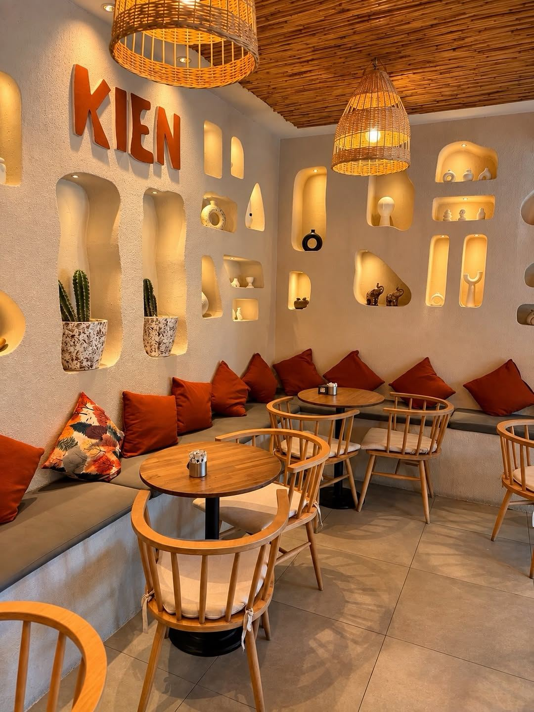
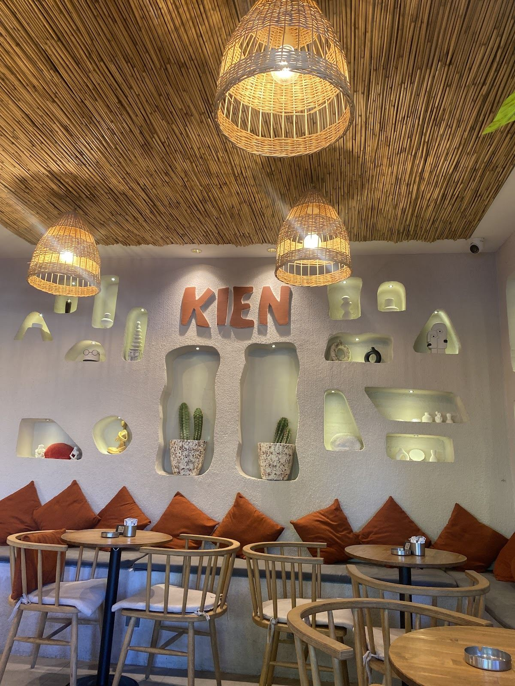

Google yorumu ★★★★★
“Kahveleri çok lezzetli.”Yağmur KılınçYorumu Google’da okuyun ↗
Sinanoba, Büyükçekmece
İster kitabınızla gelin, ister bir arkadaşınızla. KIEN’in sıcak köşelerinde günün hızını biraz düşürün.
Her gün 10.00 – 00.00

Bir araya gelmenin başka yolları
Tuval boyamadan seramik ve mum çalışmalarına, KIEN’deki buluşmalarda masalar bazen birer atölyeye dönüşüyor.
Fotoğraf önceki bir atölye hazırlığından. Yeni program, tarih ve katılım bilgisi için resmî hesabımızdan bize ulaşabilirsiniz.
Buluşmalar için Instagram ↗Misafirlerimizin gözünden
“Kahveleri çok lezzetli.”Yağmur KılınçYorumu Google’da okuyun ↗
“Ortamı çok sıcak ve huzurlu, çalışanlar inanılmaz ilgili ve güler yüzlü.”Eda dagYorumu Google’da okuyun ↗
“Cookieleri çok lezzetliydi, çalışanlarıda çok güler yüzlü.”Mustafa Melih MeteYorumu Google’da okuyun ↗
Google yorumlarından kısa alıntılar. Puan ve yorum sayısı 2 Kasım 2026 tarihinde kontrol edilmiştir.
Her gün 10.00 – 00.00
Saatler resmî Instagram profilinde belirtilmiştir. Özel günlerde ziyaret öncesi bilgi alabilirsiniz.
